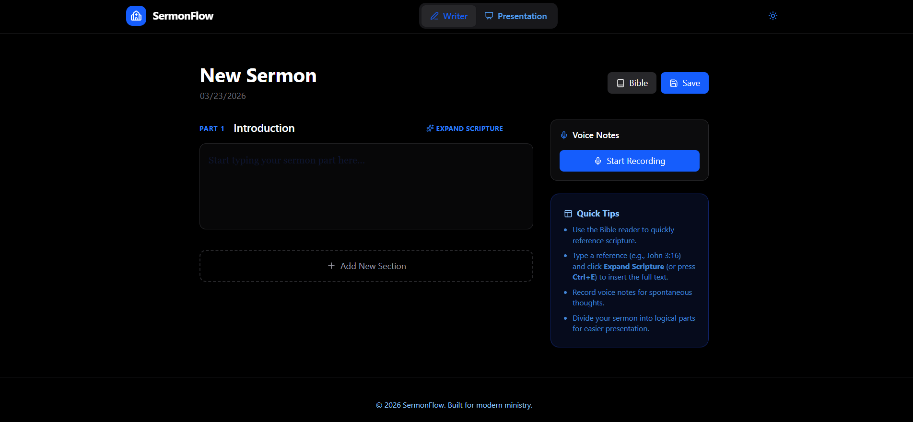

Project Case Study
SermonFlow
A sermon preparation platform designed to help pastors move from research to structure and delivery with less friction and better week-to-week consistency.
Overview
What This Project Delivers
SermonFlow was built for a repeated weekly cycle where preparation quality matters but available time is limited. The project focuses on helping pastors gather ideas, shape outlines, and keep sermon development organized from start to finish.
Rather than acting as a simple notes app, the platform frames preparation as a guided process. This supports both experienced speakers and developing communicators who want a clearer path from passage study to final message delivery.
Highlights
Key Features
- Workflow-centered design supports progression from scripture research to structured sermon composition.
- Content organization patterns make it easier to revisit, refine, and reuse preparation material over time.
- Clean interface priorities help users stay focused during long writing and review sessions.
- Cloud-hosted deployment model supports reliable access from multiple contexts and devices.
- Feature direction is tailored to ministry communication realities, not generic writing use cases.
Build
Stack And Tools
Screenshots
Professional Screenshot Review


Branding, interface, and live-action captures from the current SermonFlow implementation.